从汇编理解 Block 的内存结构
❓ 在断点调试 iOS 程序碰到 block 作为函数的形参时，如果想知道该 block 本身的函数签名信息和函数体地址时，有哪些办法？
🤪 当然是在源码里面直接查看 block 的声明和调用了！
❗️ 但如果源码不可见呢？在分析第三方闭源库或友商 App 的某些逻辑实现时，就只有汇编代码可用
☕️ 本文将通过汇编代码入手探讨 block 的内存结构，并尝试还原 block 的函数签名信息和函数体真实地址
环境准备
如果拿真实案例来做分析，势必会有一系列繁琐的前期准备步骤，而且一时也想不起来有哪些友商 App 刚好可以做 demo，所以本文将使用本地环境做模拟，并直接从最关键的步骤开始
打开 Xcode，新建一个
Single View App，将下面的代码贴入ViewController.m中，准备好证书和 64bit 真机。1
2
3
4
5
6
7
8
9
10
11
12
13
14
15
16
17
18
19
20
21
22
23#import "ViewController.h"
typedef void(^HHBlock)(NSString *,NSInteger );
@interface ViewController ()
@end
@implementation ViewController
- (void)viewDidLoad
{
[super viewDidLoad];
void (^testBlock)(NSString *, NSInteger ) = ^(NSString *var1, NSInteger var2){
NSLog(@"var1 = %@, var2 = %@", var1, @(var2));
};
[self doBlockTest:testBlock];
}
- (void)doBlockTest:(HHBlock)block
{
block(@"v1",10086);
}
@end- 为了尽量模拟真实环境也为了去掉汇编中不必要的指令，在 Xcode 的 Scheme 中将
Run -> Build Configuration修改为 Release ；然后在[self doBlockTest:testBlock];这行下断点 - 点
Run，等运行到断点位置后，勾选 Xcode 菜单Debug -> Debug Workflow -> Always Show Disassembly打开汇编指令视图：
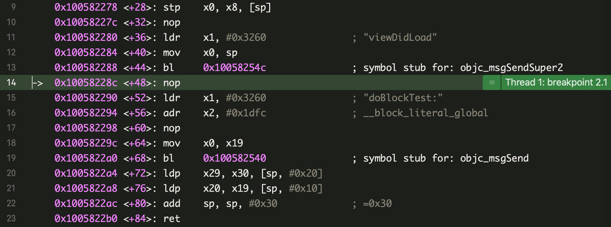
调用前的分析
从现在开始，我们假装忘记了刚刚写的源码，尝试从汇编代码中得到 block 的基本信息。
从第 14 行开始分析：
L14.nop: 空指令，什么也不做，猜测是和内存对齐有关
L15.ldr x1, #0x3260: 将#0x3260指向的内存数据加载到寄存器x1中
L16.adr x2, #0x1dfc: 将#0x1dfc指向的内存数据加载到寄存器x2中
L17. 同第 14 行
L18.mov x0, x19: 将 19 号寄存器的值复制到 0 号寄存器
L19.bl: 调用0x100582540处的函数，即objc_msgSend的调用按住
Control键，通过点Step info单步执行到第 19 行。objc_msgSend原型为objc_msgSend(id self, SEL op,...)，本例中有三个参数，按照约定这三个参数将依次放在x0、x1、x2中。所以x0为ViewController实例，x1为 selector，x2为 block 结构体指针。读取寄存器和打印x0可验证：
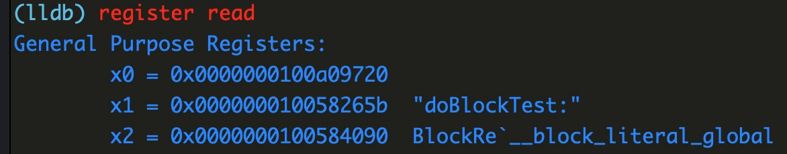
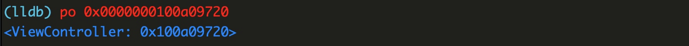
block 类型形参的分析
前面的更多是汇编基础的回顾，现在即将进入重点
点
Step over进入到真正被调用函数，如图：
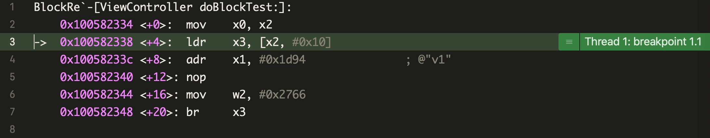
按照刚刚的分析，x2里面就是这个 block 形参，直接po该形参是没有函数体地址和函数签名等信息的：
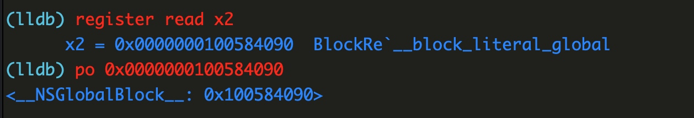尝试还原 block 信息，按行分析：
L3.ldr x3, [x2, #0x10]: 将x2指向的内容加上 16 个字节偏移后的地址，加载到x3中
L4.adr x1, #0x1d94: 将#0x1d94指向的内容加载到x1
L5. 同上
L6.mov w2, #0x2766: 将#0x2766复制到w2的低 32 位上。0x2766也就是十进制的10086
L7.br x3: 跳转到x3指向的地址上执行根据上下文，第 2 行中的
x2中就是 block 形参指针（0x0000000100584090），在第 3 行中，取了该指针指向内容并偏移0x10处的地址 P 赋值给了x3，在第 7 行中执行了x3指向的内容（也是一个地址），说明 P 是一个函数（函数指针）可被执行，这正是 block 的特性。参考 由 block 的内存布局衍生而来的面试题1
2
3
4
5
6
7
8
9
10
11
12
13
14
15
16struct Block_literal_1 {
void *isa; // initialized to &_NSConcreteStackBlock or &_NSConcreteGlobalBlock
int flags;
int reserved;
void (*invoke)(void *, ...);
struct Block_descriptor_1 {
unsigned long int reserved; // NULL
unsigned long int size; // sizeof(struct Block_literal_1)
// optional helper functions
void (*copy_helper)(void *dst, void *src); // IFF (1<<25)
void (*dispose_helper)(void *src); // IFF (1<<25)
// required ABI.2010.3.16
const char *signature; // IFF (1<<30)
} *descriptor;
// imported variables
};block 结构体指针偏移
sizeof(void *) + sizeof(int) + sizeof(reserved)后就是真正函数体invoke的地址。在 64bit 系统上指针类型和int类型分别占用 8 个字节和 4 个字节，考虑到结构体内存对齐，真正的函数体的偏移量为： 8 + 8 = 0x10，即 16 个字节，invoke的地址为：结构体指针地址 + offset(16 字节)。
接下来我们读取这个函数体地址，首先打印 block 结构体指针指向的内容：
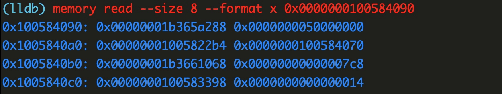结构体内容开始于
0x00000001b365a288，函数体invoke地址开始于 16 字节后，占用 8 个字节，所以其地址为：0x00000001005822b4，我们在这里下一个断点：br s -a 0x00000001005822b4，等会验证下是不是刚好断在 block 的实现里面获取 block 的函数签名
函数签名在Block_descriptor_1类型结构体descriptor的signature成员变量上，我们目标是通过signature得到NSMethodSignature实例，进而得到invoke详细的函数签名信息。descriptor的偏移量：offset(*invoke) + sizeof(*invoke)，所以descriptor的地址为0x0000000100584070。另外根据文档，并不是所有 block 都存在这个signature变量，需要通过flags与 block 中定义的枚举掩码进行&操作来判断，枚举掩码定义：1
2
3
4
5
6
7
8
9
10
11
12
13
14
15enum {
// Set to true on blocks that have captures (and thus are not true
// global blocks) but are known not to escape for various other
// reasons. For backward compatibility with old runtimes, whenever
// BLOCK_IS_NOESCAPE is set, BLOCK_IS_GLOBAL is set too. Copying a
// non-escaping block returns the original block and releasing such a
// block is a no-op, which is exactly how global blocks are handled.
BLOCK_IS_NOESCAPE = (1 << 23),
BLOCK_HAS_COPY_DISPOSE = (1 << 25),
BLOCK_HAS_CTOR = (1 << 26), // helpers have C++ code
BLOCK_IS_GLOBAL = (1 << 28),
BLOCK_HAS_STRET = (1 << 29), // IFF BLOCK_HAS_SIGNATURE
BLOCK_HAS_SIGNATURE = (1 << 30),
};按照刚刚的方法，尝试获取
flags的值：
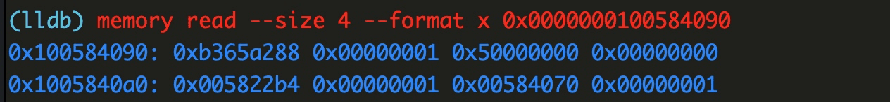flags的值为0x50000000，判断后发现存在signature:
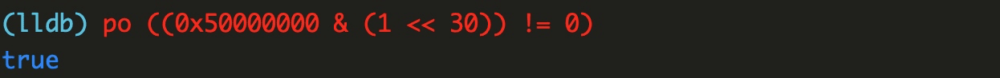signature近在咫尺！但是仔细看 block 文档的定义，排在signature前面的两个函数指针copy_helper和dispose_helper有这句注释：optional helper functions，看来还需要判断这两个指针是否存在：
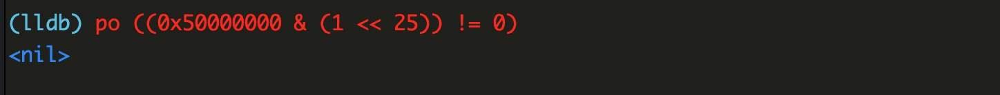嗯，不存在，所以
signature的偏移量:offset(long int) + offset(long int)，长度sizeof(char *)，接着打印descriptor的内容：
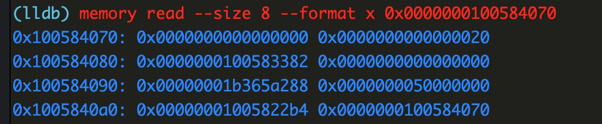所以
signature的值为0x0000000100583382，打印看看是什么:
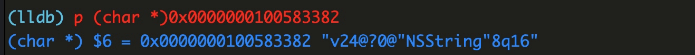眼熟的 Type Encodings 字符串，转换成
NSMethodSignature的实例看看：
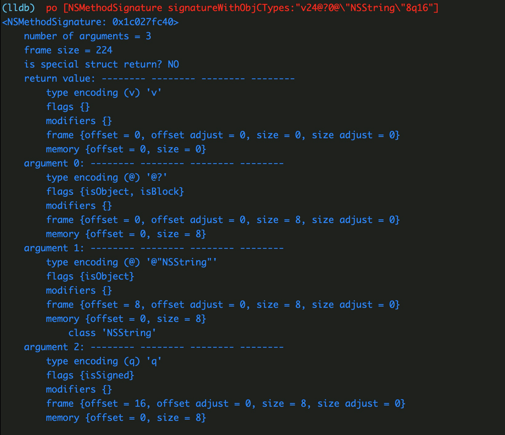这个 block 函数体没有返回值（
v->void），接收 3 个参数，第一个是 block ——这是所有 block 函数体的潜规则（将上述源码编译为 C++ 的就能知道），后续两个的参数依次为：@(NSString *) 和q(long long)，和源码一致。- 函数体地址正确性验证
还记得第 4 步在0x00000001005822b4设置的断点吗？点Continue或 lldb 输入c，让程序继续执行，结果在0x00000001005822b4处被断住了：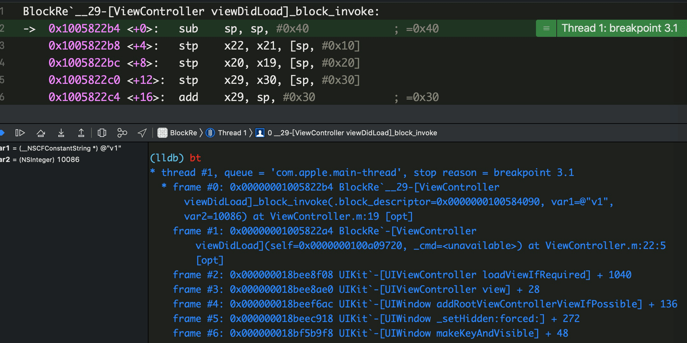
而且断住的位置在ViewController.m:19，查看源码发现刚好就是 block 的实现：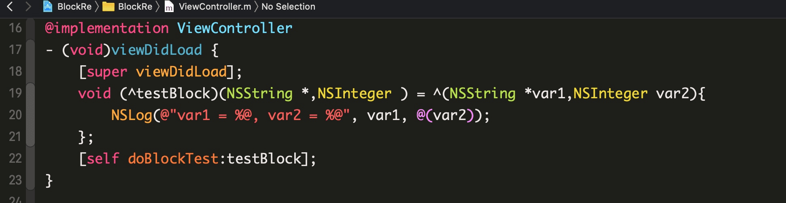
PS：本人汇编初学，若发现理解不到位或者错误的地方，望指教！
Ref
本博客所有文章除特别声明外，均采用 CC BY-SA 4.0 协议 ，转载请注明出处！